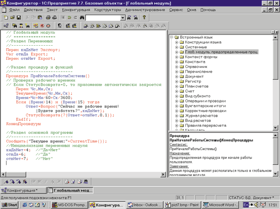
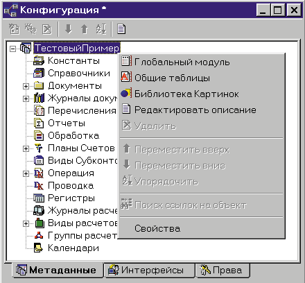

Андрей Колесов
Казалось бы, фирма "1С" (http://www.1c.ru) не нуждается в особых представлениях - это одна из самых известных торговых марок на российском ИТ-рынке. О ее существовании знают даже те, кто далек от бухгалтерского учета и компьютерных технологий. По некоторым оценкам, не менее половины российских предприятий используют для автоматизации учетных задач продукты "1С".
Говоря об "1С", нужно также иметь в виду внушительную армию фирм-партнеров, количество которых уже давно исчисляется четырехзначным числом. Общие доходы "1С:Индустрии" (продажа и услуги по внедрению систем на базе технологий "1С") составляют сегодня не менее 100-150 млн. долл. в год. (доля самой компании "1С" в этой сумме - 15-20%).
Именно такое внушительное положение на российском ИТ-рынке вызывает интерес к технологиям фирмы, в том числе перспективам их развития. Тут можно вспомнить, что еще десять лет назад российские пользователи из числа "серьезных клиентов" явно отдавали предпочтение зарубежным программным разработкам, что объяснялось достаточно простыми соображениями - надежностью поставщиков. В последние годы отечественные разработчики прикладного ПО продемонстрировали свою устойчивость и в целом вернули доверие заказчиков. Но доказывать способность обеспечить растущие требования клиентов нужно постоянно.
Технологии и бизнес-модель
Фирма "1С" основана в 1991 г., но уже начиная с 1988 г. коллектив, из которого впоследствии сформировалась "1С", выпускал тиражные разработки, пользовавшиеся в то время спросом, - базы данных с доступом по телеграфным, телефонным и Х.25 каналам, системы электронной почты и электронных торгов. С 1991 г. "1С" всерьез занялась дистрибуцией западного ПО - электронной таблицы 1-2-3 фирмы Lotus, уже тогда сделав ставку на создание широкого круга дилеров. А вскоре фирма начала активно продвигать собственную разработку, получившую известность под названием "1С:Бухгалтерия".
При этом в острой борьбе за лидерство в сегменте рынка ПО, в котором в те годы попробовали свои силы чуть ли не все отечественные разработчики, "1C" сразу же отказалась от стратегии прямых продаж конечным пользователям. Акцент был сделан на создание коробочного продукта, доступного по цене за счет массового тиража, распространяемого через уже имевшуюся партнерскую сеть. Идея массового привлечения дилеров подкреплялась очень высокими скидками (50% и выше) при минимальных требованиях к объемам закупок (в настоящее время это пять коробок продуктов "1С" на сумму не менее 100 долл. или три продукта других фирм на сумму не менее 250 долл.).
На сегодня доля экономического ПО составляет в бизнесе компании 45% по объему продаж*, а по уровню прибыли - по крайней мере в полтора раза выше.
*Последние два года руководство "1С" не публикует абсолютных финансовых данных, однако анализ публикуемой информации позволяет оценить доходы компании от продажи коробочного экономического ПО в 2000 г. на уровне 12 млн. долл. при общем объеме поставок в 25 млн. долл.
В борьбе за рынок экономического ПО "1С" сделала ставку на создание сети партнеров, которые бы не просто перепродавали коробки, а занимались бы адаптацией технологий под конкретного заказчика, внедрением и сопровождением систем комплексной автоматизации учетных и офисных работ. Так, в 1996 г. началась программа "1С:Франчайзинг", к концу того же года фирм с таким статусом было более 200, а сейчас их уже около 1800 (всего у "1С" более 2350 дилеров в 435 городах России, странах СНГ и Балтии).
В качестве технологической базы идеи франчайзинга выступает система "1С:Предприятие". Предложив инструмент не только адаптации готовых продуктов, но и создания принципиально новых собственных решений, компания создала мощный внутренний механизм саморазвития этого сообщества партнеров. Его суть иллюстрируется очень просто - расходы на покупку самого продукта у "1С" составляют 10-15% от общей суммы внедрения проекта (остальное - торговая наценка, доработка, адаптация, обучение, сопровождение и т.п.).
В итоге, говоря "фирма "1С", мы имеем в виду не просто некий набор программных продуктов, а мощную, пронизывающую всю нашу страну комплексную инфраструктуру. Причем рост бизнеса "1С" в основном обеспечивается не за счет "отъедания" клиентов у конкурентов (хотя и не без этого), а за счет вовлечения новых слоев "неавтоматизированных" пользователей и предложения новых решений, расширяющих круг задач автоматизации, решаемых предприятиями.
Платформа "1С:Предприятие" версии V7
Внутренние средства программирования для адаптации программ к задачам конкретного пользователя появились еще в самых первых версиях бухгалтерских программ "1С". В 1994 г. компания начала разработку нового поколения продуктов, первый из которых - "1С:Торговля" 7.0 - был анонсирован два года спустя. Качественно новым моментом в нем стало то, что речь шла не только о продуктах для конечных пользователей, но также о законченной технологической платформе, которая тогда носила название V7, а сегодня известна под торговой маркой "1С:Предприятие 7.х". За эти годы система два раза обновлялась - в 1998 г. была выпущена версия 7.5, а еще через год - версия 7.7, и тогда же была в целом сформирована полная линейка продуктов "1С:Предприятие".
Таким образом, последние пять лет компания "1С" предлагает (в области экономических задач) два типа продуктов: готовые решения для автоматизации экономической деятельности предприятий и средства разработки экономического ПО. Однако, сохраняя приверженность очень осторожным и взвешенным формулировкам, представители "1С" стали говорить о позиционировании своей платформы в качестве инструмента создания приложений лишь последние два года. При этом подчеркивается, что средства программирования, входящие в состав "1С:Предприятия", изначально создавались в виде полноценного инструмента, предназначенного для разработчиков как самой "1С", так и любой другой независимой компании.
Вместе с тем компания по-прежнему считает ключевой составляющей своего бизнеса поставку продуктов для конечных пользователей и пока не рассматривает свой инструментарий в качестве самостоятельного продукта. Поэтому "1С:Предприятие" официально позиционируется как "полнофункциональное готовое решение с гибким инструментом настройки". Но мне кажется, что такой тезис определяется в первую очередь маркетинговыми, а не технологическими вопросами. Впрочем, практически никто из разработчиков на базе платформы "1С:Предприятие" не создает свои решения "с нуля" - почти всегда за основу берется одна из типовых конфигураций "1С".
Отметим, что сам термин "1С:Предприятие" означает несколько понятий, различаемых только в конкретном контексте, что создает серьезную путаницу. Во-первых, это название коробочного продукта. Во-вторых, это наименование программы, с которой работает конечный пользователь. В-третьих, это средство разработки. И наконец, это название технологической базы.
Общая логика работы системы
В общем случае схема функционирования системы "1С:Предприятие" определяется взаимодействием трех ключевых ее составляющих частей.
1. Приложение "1С:Предприятие" - программная среда, в которой функционирует некая макропрограмма, называемая "Конфигурацией". Фактически данное приложение - это специализированный интерпретатор, исходный интерфейс которого предназначен для управления режимами трансляции и для запуска минимально необходимого набора функций. (В какой-то степени здесь уместна аналогия между средой VB и работающим в этой среде VB-проектом.)
2. "Конфигурация" - это макропрограмма, работающая в среде "1С:Предприятие" и полностью определяющая функциональность решаемых пользователем задач, в том числе и настройку интерфейса (рис. 1). Физически "Конфигурация" хранится в виде специального файла-контейнера 1cv7.md. Тренировочная система "Учет основных средств", создаваемая в течение пяти дней слушателями учебных курсов, имеет размер конфигурации около 350 Кбайт. "Комплексная конфигурация", поставляемая "1С" ("Бухгалтерия", "Зарплата и Кадры", "Торговый и складской учет"), - почти 9 Мбайт.
|  |
| Рис. 1. "Конфигуратор" - среда разработки приложения.
|
Пользователь может использовать несколько конфигураций для решения различных задач. Соответственно для каждой конфигурации можно использовать несколько разных баз данных (например, с помощью одной "Бухгалтерии" обрабатывать данные нескольких организаций).
3. Приложение "Конфигуратор" - основная среда разработки конфигурации (пользовательской программы). Кроме нее, в состав пакета входят еще несколько программ для отладки конфигураций.
Итак, в общем случае владелец пакета "1С:Предприятие" может использовать готовые конфигурации, поставляемые "1С" или ее партнерами, модернизировать их (с учетом вопросов лицензирования и технической поддержки) или создавать свои собственные.
Отметим некоторые особенности разработки приложений в системе "1С:Предприятие".
1. В данном случае, в отличие от известных систем RAD и Microsoft Office/VBA, физически разнесена среды написания программ и ее исполнения. Очевидно, что это экономит ресурсы, но несколько замедляет процедуру отладки (при каждом тестовом запуске загружается среда исполнения).
2. Лицензионная политика фирмы "1С" подразумевает только комплексную поставку всех трех программных компонентов. В частности, пользователь не может купить только инструментальные средства без какой-то конфигурации. И он не может создавать с помощью пакета автономные тиражируемые приложения - новые конфигурации будут работать только в среде "1С:Предприятия". Здесь имеется полная аналогия с приложениями Microsoft Office.
3. Очень интересно реализована процедура компиляции и исполнения кода конфигурации. Программные модули хранятся в конфигурации в виде исходного текста, и компиляция каждого из них выполняется только в момент первого обращения, после чего его машинный код сохраняется в оперативной памяти. Таким образом, программа компилируется каждый раз при запуске приложения, но благодаря распределенной схеме трансляции эта операция практически незаметна пользователю (тем более, что структура языка реализует схему однопроходной трансляции, что повышает скорость преобразования кода). Отрицательный же момент используемой модели "позднего связывания" - невозможность проверки связей на уровне синтаксического контроля.
Разработка конфигурации
Разработчик может создавать свой вариант конфигурации либо на основе уже существующего варианта, либо "с нуля". Во втором случае, запустив программу "Конфигуратор" и открыв главное окно "Конфигурация", мы увидим три вкладки, которые отражают взаимосвязанные составные части конфигурации (рис. 2):
- структура метаданных;
- набор пользовательских интерфейсов;
- набор прав пользователя.
|  |
| Рис. 2. В этом окне видны все объекты, доступные разработчику.
|
Метаданные определяют всю функциональность конфигурации и представляют собой совокупность объектов - базовых конструкций создания рабочих конфигураций. По своей сути такие объекты - это предопределенные программные аналоги реальных объектов из сферы предметной деятельности предприятий.
Например, объект "Справочник" предназначен для ведения любых списков однородных данных: справочников, картотек и т.п. По характеру содержания этот объект в какой-то степени соответствует понятию "Таблица" в таких базах данных, как Access, FoхPro и пр. Однако в данном случае разработчик фактически вообще не имеет дела с понятием "база данных" - все вопросы хранения информации, в том числе создания и коррекции файлов, решаются самим объектом.
Таким образом, все объекты "1С Предприятия" принимают на себя как функции сохранения своих данных на внешних носителях, так и визуального представления информации в виде экранных диалогов (форм с набором визуальных элементов управления) и печатных документов. Кроме того, большинство объектов в качестве компонента включают модуль формы, содержащий программный код для выполнения нестандартных операций при работе с объектом.
Однако то, что мы видим в окне "Конфигурация" в начальный момент, - это лишь список доступных типов объектов.
Все объекты "1С:Предприятия" объединены в несколько групп (см. таблицу). Базовые объекты используются во всех версиях системы, и с их помощью можно создавать законченные приложения для решения достаточно широкого круга задач (например, применяя только их, слушатели пятидневных учебных курсов создают достаточно сложную систему учета основных средств). Остальные объекты представлены в виде нескольких библиотек для определенных предметных областей: "Бухгалтерский учет", "Оперативный учет", "Расчет" . Разработчику доступны те библиотеки, которые входят в состав приобретенного им варианта продукта.
Функциональная настройка объектов, а также их объединение в законченную конфигурацию выполняются с помощью встроенного языка (пока не имеющего названия). В его основе лежит упрощенный вариант синтаксиса Pascal, но ключевые слова в нем можно использовать либо на русском, либо на английском языке, а также в смешанном варианте.
Все шире, и шире, и шире...
Деятельность фирмы "1С" за последние шесть лет характеризовалась процессом движения от однопользовательской локальной "Бухгалтерии" к многопользовательским сетевым комплексным учетным системам предприятий. Соответственно расширялся круг клиентов: от малых предприятий, использующих весьма простую схему бухучета, к заказчикам среднего уровня, решающим многопрофильные бизнес-задачи. Элементарный ретроспективный анализ говорит о том, что фирма "1С" будет неизменно стремиться к расширению функциональности решаемых задач и повышению уровня заказчиков.
Поэтому один из наиболее интересных вопросов заключается в следующем - сможет ли "1С" технологически обеспечить такой процесс расширения своего присутствия на рынке автоматизации предприятий? К нему вернемся позднее, а сейчас посмотрим, что предлагается клиентам сегодня.
В состав семейства продуктов "1С:Предприятия" общего назначения входят типовые конфигурации "1С:Бухгалтерия" (бухгалтерский учет); "1С:Торговля и Склад" (оперативный учет); "1С:Зарплата и Кадры" (расчет). Есть также комплексная поставка: Бухгалтерия+Торговля и Склад+Зарплата и Кадры+Производство и Услуги (все компоненты). Отметим два момента.
Стоимость продуктов находится в диапазоне от 70 (базовая версия "Бухгалтерии") до 2800 долл. (комплексная конфигурация, клиент-серверная версия). (Это розничная цена, скидка для партнеров - 50-60%.)
Базовые и Стандартные версии имеют один и тот же исходный функционал, но первые работают только в варианте "как есть", а последние (а также Профессиональные) имеют возможность доработки и расширения.
Кроме того, предлагается целый набор специализированных конфигураций для вертикальных рынков ("Воинская часть", "Бухгалтерия для с/х предприятий", "Бухгалтерия для фермеров"), дополнительных универсальных конфигураций (в частности "Производство+Услуги") и пр.), а также ряд дополнительных функциональных ("Налогоплательщик", "Деньги", "Платежные документы" и т.д.) и технологических модулей ("Web-расширение", "Работа с торговым оборудованием" и т.п.).
Однако, если говорить о расширении функциональности предлагаемых решений, создании продуктов для вертикальных рынков, то здесь ставка делается на франчайзинговую партнерскую сеть в рамках реализации партнерской программы "1С:Совместимо". Сама "1С" при этом не только сертифицирует программы, но также оказывает помощь в их тестировании, тиражировании, распространении, защите от пиратов.
В основе этого направления лежит естественная специализация партнеров в различных отраслях. Процесс разработки тиражируемых решений непосредственно связан с появлением платформы "1С:Предприятие": если в начале 1999 г. насчитывалось 20 таких программ, то сейчас более 60 фирм предлагают более 180 типовых сертифицированных конфигураций. Анализируя их состав, легко увидеть, что предлагаемые решения довольно часто выходят за рамки традиционных для "1С" учетных "оффлайновых" задач. Тут можно найти, например, "Интернет-магазины" или предложения для планирования и управления ресурсами.
Смещение акцентов в развитии технологий "1С" представляется вполне очевидным - задача создания готовых типовых решений постепенно перекладывается на партнеров. Руководство компании так официально формулирует свой подход к этому вопросу: "Наша концепция - готовое решение + гибкий инструмент. Наиболее массовые, универсальные решения (конфигурации) мы продолжаем выпускать сами, причем спектр их расширяется. В то же время к созданию готовых отраслевых решений все активнее привлекаются партнеры, специализирующиеся на автоматизации соответствующих отраслей".
Любопытно отметить, что созданием тиражируемых решений на платформе "1С" занимаются как традиционные партнеры-франчайзи, так и независимые разработчики. В этом процессе активно участвуют авторы специализированных программ, заинтересованные в интеграции своих систем с "1С:Предприятием".
Следует отметить еще один важный момент. Сама "1С" не занимается внедрением своих технологий и реализацией конкретных проектов, но имеет несколько дочерних или совместных компаний, занимающихся именно этим, среди которых наиболее известны московские "1С-Рарус", "ИКС Технологии" и "Астор ВЦ".
Из общения с представителями независимых компаний складывается устойчивое впечатление, что они не воспринимают деятельность "дочек" как проявление конкуренции со стороны "1С". Ситуация здесь вполне понятна: эти компании представляют собой как бы передовой отряд сообщества партнеров-внедренцев, выполняя в первую очередь нетривиальные проекты пилотного характера и передавая наработанный опыт всей франчайзинговой сети (по выражению Бориса Нуралиева, "передовые колхозы").
Торопись не поспешая
Руководство компании очень тщательно относится к любым формулировкам своих целей и задач, позиционированию продуктов на рынке и т.д., явно предпочитая не форсировать события без гарантированной уверенности в реализации своих планов.
Сегодня "1С" категорически отказывается причислять свои технологии к категории "для управления предприятием", скромно говоря о "решении учетных задач". Точно так же даже в неофициальных беседах говорится лишь о позиционировании своих решений только для предприятий среднего уровня, не более того. Впрочем, партнеры "1С" проявляют меньшую щепетильность, самостоятельно расширяя круг задач автоматизации и повышая уровень заказчиков "на свой страх и риск".
Еще хотелось бы отметить прагматизм "1С", который выражается в том, что фирма не поддается искушению использовать технические новинки лишь из соображений престижа и моды, - они появляются ровно в момент готовности потенциальных клиентов (и партнеров!) к их восприятию.
В то же время ради достижения стратегических долгосрочных результатов компания готова идти на серьезные риски. Лучшим примером этого является создание собственной технологической платформы "1С:Предприятие" - даже самые доброжелательные партнеры в первый момент не до конца верили в успех данного проекта, осуществленного относительно небольшой группой разработчиков.
От файл-серверных к клиент-серверным версиям
Изначальный вариант сетевой версии программ "1С" был основан на файл-серверной технологии с использованием реляционных баз данных формата DBF. В 1996 г. был впервые реализован клиент-серверный вариант на базе СУБД Btrieve в "1С:Бухгалтерии 6.0 ПРОФ".
Любопытно, что, несмотря на наличие уже тогда Microsoft SQL Server 5.0, "1С" явно не спешила с его использованием, мотивируя это многими причинами, в том числе необходимостью поддержки платформы Novell, а также "сыростью" продукта Microsoft (даже когда вышла версия 6.0).
Однако выход версии Microsoft SQL Server 7.0 все откладывался, а тянуть с SQL-вариантом было уже невозможно. Именно поэтому в начале 1998 г. было решено выпустить версию на основе Microsoft SQL Server 6.5, и в мае был представлен совместный продукт "1C" и Microsoft "1С:MS SQL 6.5 - Предприятие 7.5". Отметим, что это было первое в Восточной Европе лицензионное соглашение о тиражировании Microsoft SQL Server третьими поставщиками. Потом появились варианты такой системы на базе новейших версий "1С:Предприятия" и Microsoft SQL Server.
Если при выпуске первого варианта совместного продукта (для SQL 6.5) делался упор на возможность создания более надежной информационной системы, то при переходе на следующие версии SQL ключевой задачей было резкое повышение ее производительности. Например, по данным тестирования, проведенного фирмой "ИКС Технологии" на рабочих системах своих клиентов, простое автоматическое обновление "1С:Предприятие 7.5" + Microsoft SQL 6.5 на "1С:Предприятие 7.7" + Microsoft SQL 7.0 увеличивает производительность системы в 1,5-4 раза. А по оценкам разработчиков "1С", за счет оптимизации конкретных систем пользователей с помощью новых встроенных средств конфигурирования систем нижнего уровня можно увеличить скорость ключевых операций в 100 и более раз.
Тут опять хотелось бы отметить прагматизм подхода "1С". На вопрос о том, почему фирма выпустила версию системы, не обеспечив при этом возможность использования с SQL-базами других разработчиков, в свое время был получен примерно такой ответ: "Мы хотим создать эффективную систему и не намерены зря тратить деньги, чтобы иметь возможность указать в рекламе длинный список совместимых СУБД, которыми наши клиенты в обозримом будущем все равно не будут реально пользоваться". Приведем здесь цитату из интервью "Росбизнесконсалтингу" директора "1С" Бориса Нуралиева: "Мы не сторонники эксклюзивных альянсов и считаем, что многоплатфоpменность полезна для продвижения той или иной разработки. Но выбор платформы - не чисто техническое, а стратегическое решение. При его принятии очень важны стабильность и предсказуемость производителя платформы, его политика работы на российском рынке, наличие здесь надежной технической и маркетинговой поддержки и т.д.".
Стоит также вспомнить о том, что "1С" не поддалась уговорам Microsoft (а они имели место) использовать ранние версии SQL Server. Более того, при внедрении Microsoft SQL Server 7.0 имел место весьма любопытный прецедент - корпорация пошла на исправление одной функции в начальном варианте этой СУБД для обеспечения совместимости с "1С:Предприятием".
Хотелось бы особо отметить стратегический характер сотрудничества Microsoft и "1С". Сегодня одна из основных задач Microsoft - продвижение своих серверных продуктов и Интернет-технологий на массовый рынок малых и средних предприятий. Сильные позиции "1С" в этом сегменте клиентов не требует особых доказательств. В свою очередь, желание фирмы "1С" использовать современные технологии Microsoft определяется, с одной стороны, необходимостью опережающего предложения новых средств для традиционных клиентов фирмы, а с другой - намерением продвигать свои продукты в сторону более крупных заказчиков.
Кто за что отвечает
Нет сомнений, что именно программируемая платформа для разработки учетных систем предприятий позволила "1С" создать массовый продукт для этого рынка. Помимо маркетинговых аспектов (заинтересованность партнеров), были и чисто технические причины. Действительно, при формировании новой учетной системы в условиях экономики переходного периода (постоянные изменения законов и нормативов, наличие огромного числа разных моделей бизнеса, параллельное ведение нескольких "касс") обычные программы с использованием настроек в диалоговых окнах просто не годились для реальной работы. Приходилось (и приходится сейчас) постоянно "допрограммировать" руками.
Однако ключевое отличие внесения изменений на уровне кода от управления отдельными параметрами системы заключается в том, что в первом случае пользователь автоматически принимает ответственность за работоспособность своей системы на себя. Многие клиенты об этом забывают, делая какие-то программные доработки в купленных конфигурациях, а потом обращаясь с претензиями к "1С". И тут они с удивлением узнают, что фирма гарантирует качество работы своих партнеров только при внедрении "фирменных" решений, но в общем случае ничего не может обещать в случае внесения изменения в код. К сожалению, многие заказчики забывают, что, заключая договор об адаптации программ под свои нужды, они имеют дело уже с конкретной компанией XXX, а не с фирмой "1С".
Всем известно, где бывает бесплатный сыр. Гибкость и невысокая цена самого продукта почти неминуемо должны сопровождаться повышением стоимости сопровождения. И точно так же по мере усиления контроля над рынком можно ожидать перетекания бесплатных услуг в разряд платных.
Простой пример - коробка "1С:Предприятие. Комплексная конфигурация. Профессиональная, однопользовательская" стоит в розницу 480 долл. В нее входит еще годовая подписка на ежемесячные компакт-диски информационно-технического сопровождения "1С:ИТС" (обновления и большой набор методических и технических материалов). Часто в эту цену входят услуги партнера-продавца по установке программы, а также по сопровождению и обновлению с помощью дисков ИТС. Но спустя год многие покупатели с удивлением узнают (полезно сразу изучать содержимое коробки и условия поставки), что продолжение подписки на ИТС стоит около 200 долл. в год, а франчайзи готов продолжать абонементное обслуживание всей системы за 60 долл. в месяц.
Получается, что стоимость полного сопровождения программы в год (560 долл.) уже превышает начальную цену продукта - для огромного числа наших пользователей это оказывается неожиданностью, так как мы исторически привыкли, что капитальные затраты гораздо выше текущих. Но отметим, что у клиента всегда есть выбор - можно отказаться от покупки дисков, переписывая обновления на дискеты. Можно отказаться от абонентного обслуживания и перейти на оплату разовых услуг (в Москве - 25-30 долл. в час, а по стране - 15-16 долл./час). Можно сменить сервисного партнера или вообще отказаться от "фирменных" услуг. В конце концов, можно сменить всю программную платформу, если функции и услуги другого поставщика вам больше подходят.
| Клиентам, которые собираются заказывать внедрение ИТ-проектов, полезно познакомиться с таким рекламным лозунгом: "Быстро! Качественно! Дешево! Выберите любые два!" Да, сочетание всех трех характеристик - это явная утопия. |
Каковы перспективы
Мы возвращаемся к вопросу о том, каковы перспективы применения продуктов "1С". В какой степени эти технологии готовы к росту объема задач заказчиков и функциональности реализуемых проектов?
Все это серьезно волнует и разработчиков-внедренцев, и пользователей (в том числе потенциальных) технологий "1С". Первые заинтересованы в расширении круга клиентуры. Вторые прочувствовали проблемы масштабируемости ИС - многие из них начинали автоматизацию с установки бухгалтерской программы на локальный компьютер, а сейчас имеют сетевые комплексные учетные системы.
С одной стороны, по-видимому, технологический потенциал самой платформы V7 должен быть уже в значительной степени реализован. Это понятно: ее архитектура закладывалась 7 лет назад с ориентацией на клиентов из категории малого бизнеса. При этом и разработчики платформы, и партнеры-внедренцы отмечают, что возможности ее оказались намного выше, чем это планировалось изначально, - платформа позволила реализовать технические решения, о которых в те времена никто и не задумывался (например, Интернет-проекты). Две модернизации (версии 7.5 и 7.7) позволили повысить производительность и перейти к созданию систем на базе SQL. Создана полная линейка продуктов "1С:Предприятие", отработаны механизмы обновления и функционального расширения программ. Показана возможность применения технологии при реализации достаточно крупных проектов с десятками рабочих мест.
С другой стороны, возможности создания систем на базе нынешней V7 еще далеко не исчерпаны. Этот тезис требует пояснения. Во-первых, рост автоматизированной системы может идти не только за счет механического увеличения транзакций или числа рабочих мест, но и в результате увеличения выполняемых функций. Кроме того, сегодня актуально создание программ, которые не столько умеют делать "все-все-все", сколько способны к гибкой интеграции с другими комплексами. Хорошие возможности V7 тут вполне очевидны.
Во-вторых, реализация "серьезных" проектов чаще всего не сводится к внедрению готового решения самой "1С" - обычно требуется достаточно серьезная адаптация и доработка. При этом нужно иметь в виду, что архитектура V7, как и многие другие программируемые системы, довольно чувствительна к ошибкам проектировщиков.
Так что выбор платформы не может быть отделен от вопроса выбора системного интегратора или разработчика.
В-третьих, реализация крупных проектов связана с необходимостью решения чисто организационно-финансовых проблем. Основной контингент партнеров "1С" ориентируется на модель "утром деньги - вечером решение". Для больших проектов нужно выстраивание более сложных схем оплаты и кредитования.
С учетом сказанного понятно, почему сегодня фирма "1С" основное внимание уделяет качественному росту своих партнеров-внедренцев (как известно, например, переход к использованию трехзвенной клиент-серверной архитектуры автоматически требует более высокой квалификации разработчиков). Это, в частности, выражается в реализации программы по внедрению типовой системы качества в фирмах-франчайзи и их сертификации по стандарту ISO 9001.
Вместе с тем расширение присутствия "1С" на рынке автоматизации предприятий, как мне кажется, потребует решения целого ряда технологических задач, связанных с дальнейшим повышением масштабируемости, производительности, эффективности разработки, надежности и т.п. Как эти задачи будут решаться, мы, наверное, увидим спустя некоторое время.
Состав библиотек и объектов системы "1С:Предприятие"
| Наименование | Краткая характеристика |
|---|---|
|
Базовые объекты
|
|
| Константы | Постоянные (условно-постоянные величины) |
| Справочники | Списки однородных элементов данных |
| Документы | Служат для ввода информации о совершенных хозяйственных операциях |
| Журналы документов | Cписки объектов данных типа "Документ" |
| Перечисления | Списки значений, задаваемые на этапе конфигурирования |
| Отчеты | Средство получения выходной информации |
| Обработка | Объекты метаданных этого вида используются для различных действий над информационной базой |
|
Объекты библиотеки "Бухгалтерский учет"
|
|
| Планы Счетов | Списки объектов данных типа "бухгалтерский счет" - учетных регистров, по которым будут группироваться средства при работе с системой "1С:Предприятие" |
| Виды Субконто | Списки объектов аналитического учета |
| Операция | Средство отражения в бухгалтерском учете хозяйственных операций, происходящих на предприятии |
| Проводка | Бухгалтерские проводки |
|
Объекты библиотеки "Оперативный учет"
|
|
| Регистры | Средство накопления оперативной информации о наличии и движении средств |
|
Объекты библиотеки "Расчет"
|
|
| Журналы расчетов | Средство проведения периодических расчетов и хранения результатов расчетов прошлых периодов |
| Виды расчетов | Алгоритмы, по которым можно проводить расчеты записей журналов расчета |
| Группы расчетов | Средство логического объединения видов расчета по тем или иным признакам |
| Календари | Средство построения графиков работы предприятия, внешних организаций или отдельных категорий работников |